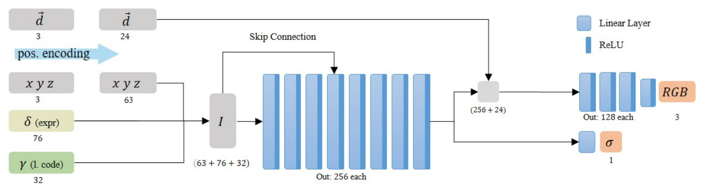

\(
\def\sc#1{\dosc#1\csod}
\def\dosc#1#2\csod{{\rm #1{\small #2}}}
\newcommand{\dee}{\mathrm{d}}
\newcommand{\Dee}{\mathrm{D}}
\newcommand{\In}{\mathrm{in}}
\newcommand{\Out}{\mathrm{out}}
\newcommand{\pdf}{\mathrm{pdf}}
\newcommand{\Cov}{\mathrm{Cov}}
\newcommand{\Var}{\mathrm{Var}}
\newcommand{\ve}[1]{\mathbf{#1}}
\newcommand{\mrm}[1]{\mathrm{#1}}
\newcommand{\etal}{{et~al.}}
\newcommand{\sphere}{\mathbb{S}^2}
\newcommand{\modeint}{\mathcal{M}}
\newcommand{\azimint}{\mathcal{N}}
\newcommand{\ra}{\rightarrow}
\newcommand{\mcal}[1]{\mathcal{#1}}
\newcommand{\X}{\mathcal{X}}
\newcommand{\Y}{\mathcal{Y}}
\newcommand{\Z}{\mathcal{Z}}
\newcommand{\x}{\mathbf{x}}
\newcommand{\y}{\mathbf{y}}
\newcommand{\z}{\mathbf{z}}
\newcommand{\tr}{\mathrm{tr}}
\newcommand{\sgn}{\mathrm{sgn}}
\newcommand{\diag}{\mathrm{diag}}
\newcommand{\Real}{\mathbb{R}}
\newcommand{\sseq}{\subseteq}
\newcommand{\ov}[1]{\overline{#1}}
\newcommand{\iprod}{\mathbin{\lrcorner}}
\)
Neural Scene Representations for Computer Graphics Applications
There is a bunch of recent works on representing scenes and 3D objects implicitly with neural networks. This note is written as I read some of these papers.
1 Neural Radiance Fields
- This is an ECCV 2020 paper by Mildenhall et al. [LINK]
- This paper deals with the problem of view synthesis.
- We are given multiple photographs of a scene, and we assume that the camera parameters for each photograph is also given.
- The goal is to render the scene from a new view point, given a new camera parameter.
- The paper represent a scene with a continous 5D function.
- The input is a 3D position $(x,y,z)$ and a direction $(\theta, \phi)$.
- The function outputs two things:
- The material density $\sigma$ at point $(x,y,z)$.
- The RGB radiance from point $(x,y,z)$ in the direction $(\theta,\phi)$.
This function is called the neural radiance field (NeRF).
- The paper optimizes an MLP (without any convolutional layers) to represent the function.
- NeRF can be rendered by any volume rendering algorithm.
- The paper uses standard ray marching.
- NeRF has two obvious advantages:
- Because it encodes volume density, it can automatically handle translucency.
- Because radiance is also a function of direction, it can represent specular reflections.
- Because the rendering process is differentiable, we have an end-to-end optimization process that fits a neural representation to photographs.
- The loss is just a simple L2 difference.
- Two important tricks.
- The 5D coordinate input is transformed into a sequence of sine and cosine values (similar to the positional encoding used in transformers) before being fed to the network. This enables the network to represent high frequency details.
- To reduce the number of sample points along a ray, the paper proposes a two-level hierachical sampling algorithm.
1.1 Rendering Algorithm
- We start with a review of volume rendering. More details can be found in another note of mine. In particular, see Section 2.1 and 2.2.
- In the setting of NeRF, we have a volume consisting of absorbing materials that is also emitting light. There is no scattering. NeRF encodes:
- The absorption cross section $\sigma(\ve{x})$ where $\ve{x} \in \Real^3$.
- The radiance per density $\ve{c}(\ve{x},\omega)$ where $\omega \in \mathbb{S}^2$. With this, the source term in the radiative transfer equation can be written as:
\begin{align*}
Q(\ve{x},\omega) = \sigma(\ve{x},\omega) \ve{c}(\ve{x},\omega).
\end{align*}
- Let $L(\ve{x},\omega)$ denote the radiance going out of $\ve{x}$ in direction $\omega$. We have that the directional derivative of $L$ is given by:
\begin{align*}
\omega \cdot \nabla L(\ve{x}, \omega)
= \frac{\dee L(\ve{x} + s\omega, \omega)}{\dee s}
= -\sigma(\ve{x},\omega)L(\ve{x},\omega) + \sigma(\ve{x},\omega) \ve{c}(\ve{x},\omega).
\end{align*}
- The solution to the above equation is given as follows.
- Let $\omega_0$ be a direction.
- Let $\ve{x}_0$ be a point in $\Real^3$ such that, at and beyond $\ve{x}_0$ in the direction $-\omega_0$, there is no light being emitted in direction $\omega_0$.
- In other words, $\ve{x}_0$ may be a point on the boundary of the scene.
- By this assumption, we have that $L(\ve{x}_0,\omega_0) = 0$.
- Then, for any $s_0 > 0$, we have that:
\begin{align*}
L(\ve{x}_0 + s_0 \omega_0,\omega_0)
= \int_{0}^{s_0} T(\ve{x}_0 + s\omega_0 \rightarrow \ve{x}_0 + s_0 \omega_0) \sigma(\ve{x}_0 + s\omega_0, \omega_0)\ve{c}(\ve{x}_0 + s\omega_0, \omega_0)\, \dee s
\end{align*}
where
\begin{align*}
T(\ve{x}_0 + s\omega_0 \rightarrow \ve{x}_0 + s_0\omega_0)
= \exp\bigg( - \int_s^{s_0} \sigma(\ve{x}_0 + u\omega_0)\, \dee u \bigg).
\end{align*}
is the transmittance between $\ve{x}_0 +s\omega_0$ and $\ve{x}_0 + s_0\omega_0$.
- We now discuss how to approximate the above integral with ray marching.
-
Suppose we have a camera ray $\ve{r}(s) = \ve{o} + s \omega$ that intersects the scene's bounding box in $s$-interval $[s_n, s_f]$.
- We would like to compute $L(\ve{o},-\omega) = L(\ve{o}+s_n \omega, -\omega)$.
- A quantity that will be important is the transmisstancde $T(\ve{o} + s \omega \rightarrow \ve{o} + s_n \omega)$ where $s > s_n$. Let us abbrevitate this by just $T(s)$.
- We partition $[s_n,s_f]$ into $N$ evenly-spaced bins, and then draw one sample uniformly at random from within each bin:
\begin{align*}
s_i \sim \mathrm{Uniform}\bigg( \bigg[ s_n + \frac{i-1}{N}(s_f - s_n), t_n + \frac{i}{N}(s_f - s_n) \bigg] \bigg).
\end{align*}
- We then evaluate the NeRF at $\ve{o} + s_i\omega$. Let
\begin{align*}
\sigma_i &= \sigma(\ve{o} + s_i\omega), \\
\ve{c}_i &= \ve{c}(\ve{o} + s_i\omega, -\omega), \\
\delta_i &= s_i - s_{i-1}.
\end{align*}
where $s_0 = s_n$. Also, let $\sigma_0 = 0$.
- The mental picture is that we have now partition in interval $[s_n, s_f]$ into $N+1$ subinternals:
\begin{align*}
[s_0, s_1), [s_1, s_2), \dotsc, [s_{N-1}, s_N), [s_N, s_{N+1}]
\end{align*}
where $s_{N+1} = s_f$. For the purpose of approximating the integral, we assume that the $i$th interval has uniform absorption cross section $\sigma_{i-1}$.
- With the above mental picture, we have $T(s_i)$ is given by:
\begin{align*}
T(s_i) \approx T_i = \exp\bigg( -\sum_{j=1}^i \delta_i \sigma_{i-1} \bigg).
\end{align*}
Moreover, for any $s$ such that $s_{i} \leq s_{i+1}$, we have that
\begin{align*}
T(s)
&= \exp\bigg(-\int_{s_0}^{s} \sigma(\ve{o} + u \omega )\, \dee u \bigg) \\
&= \exp\bigg(-\int_{s_0}^{s_i} \sigma(\ve{o} + u \omega )\, \dee u -\int_{s_i}^{s} \sigma(\ve{o} + u \omega )\, \dee u \bigg) \\
&= \exp\bigg(-\int_{s_0}^{s_i} \sigma(\ve{o} + u \omega )\, \dee u\bigg) \exp\bigg( -\int_{s_i}^{s} \sigma(\ve{o} + u \omega )\, \dee u \bigg) \\
&= T(s_i) \exp\bigg( -\int_{s_i}^{s} \sigma(\ve{o} + u \omega )\, \dee u \bigg) \\
&\approx T_i \exp(-\sigma_i(s - s_i)).
\end{align*}
- Now,
\begin{align*}
L(\ve{o},-\omega)
&= \int_{s_0}^{s_{N+1}} T(s) \sigma(\ve{o} + s\omega, -\omega) \ve{c}(\ve{o} + s\omega, -\omega)\, \dee s \\
&= \sum_{i=0}^{N} \int_{s_{i}}^{s_{i+1}} T(s) \sigma(\ve{o} + s\omega, -\omega) \ve{c}(\ve{o} + s\omega, -\omega)\, \dee s \\
&\approx \sum_{i=0}^{N} \int_{s_{i}}^{s_{i+1}} T_i \exp(-\sigma_i(s - s_i)) \sigma_i \ve{c}_i \, \dee s \\
&= \sum_{i=0}^{N} T_i \ve{c}_i \int_{s_i}^{s_{i+1}} \sigma_i \exp(-\sigma_i(s-s_i))\, \dee s.
\end{align*}
Let $t = s - s_i$, we have
\begin{align*}
\int_{s_i}^{s_{i+1}} \sigma_i \exp(-\sigma_i(s-s_i))\, \dee s
&= \int_0^{\delta_{i+1}} \sigma_i e^{-\sigma_i t}\, \dee t
= [ - e^{\sigma_i t} ]_{0}^{\delta_{i+1}}
= 1 - e^{-\sigma_i \delta_{i+1}}.
\end{align*}
As a result,
\begin{align*}
L(\ve{o},-\omega)
&\approx \sum_{i=0}^N T_i \ve{c}_i (1 - e^{-\sigma_i \delta_{i+1}}).
\end{align*}
Because $\sigma_0 = 0$, we can rewrite the above expression as:
\begin{align*}
L(\ve{o},-\omega)
&\approx \sum_{i=1}^N T_i \ve{c}_i (1 - e^{-\sigma_i \delta_{i+1}})
= \sum_{i=1}^N T_i (1 - e^{-\sigma_i \delta_{i+1}}) \ve{c}_i,
\end{align*}
which is very similar to the expression given in the paper.
1.2 Hierarchical Sampling
- Instead of using one network, the paper optimizes two networks together in order to use them to perform hierarchical sampling.
- The two networks have the same structure. One is called the "coarse" network, and the other is called the "fine" network.
- Given a ray $\ve{r}(s) = \ve{o} + s\omega$, we compute two estimates of the radiance.
- The first estimate use the ray marching algorithm above with the coarse network. For this, we choose $N_c$ samples and compute:
\begin{align*}
\hat{\ve{C}}_c(\ve{r})
&= \sum_{i=1}^{N_c} T_i (1 - e^{-\sigma_i \delta_{i+1}}) \ve{c}_i.
\end{align*}
- Letting $w_i = T_i (1 - e^{-\sigma_i \delta_{i+1}})$, we can write $\hat{\ve{C}}_c(\ve{r})$ as a weighted sum of the $\ve{c}_i$'s:
\begin{align*}
\hat{\ve{C}}_c(\ve{r})
&= \sum_{i=1}^{N_c} w_i \ve{c}_i.
\end{align*}
- We normalize the weights by computing:
\begin{align*}
\hat{w_i} = \frac{w_i}{\sum_{i=1}^{N_c} w_i}.
\end{align*}
The weights give a piecewise-constasnt PDF along the ray. (It is unclear what intervals the paper uses for this PDF. I presume that it is the original equally-sized intervals.)
- From the above PDF, the paper samples $N_f$ samples. It then uses the $N_c + N_f$ samples to estimate the radiance with the fine network. The resulting value $\hat{\ve{C}}_f(\ve{r})$ is the output radiance value.
- The sampling strategy above will put more samples in areas where visible materials are present.
- The paper uses $N_c = 64$ and $N_f = 128$ in their experiments.
- This kind of mean that the rendering cannot be real time.
1.3 Network Architecture and Optimization
1.3.1 Positional Encoding
- The input to the network is the 5-tuple $(x,y,z,\theta,\phi).$
- Each comoponent is normalized to lie in the interval $[-1,1]$. (I don't think it is necessary to do this to $\theta$ and $\phi$ though.)
- The paper found that operating directly on these coordinates makes it hard for the network to learn high-frequency features.
- For each compontent $p$ of the input tuple, the network maps it to:
\begin{align*}
\gamma(p)
= \begin{bmatrix}
\sin(2^0\pi p) \\
\cos(2^0\pi p) \\
\sin(2^1\pi p) \\
\cos(2^1\pi p) \\
\vdots \\
\sin(2^{L-1}\pi p) \\
\cos(2^{L-1}\pi p) \\
\end{bmatrix}
\end{align*}
- The paper uses $L = 10$ for each of the $xyz$-components, an $L = 4$ for each of the $\theta\phi$-compnents.
- The mappings are then passed to the next part of the network.
1.3.2 The Main Network Body
- The positional encoding of the 3D position $\gamma(\ve{x}) \in \Real^{60}$ is first processed with an MLP with 8 fully connected layers.
- Each layer having 256 neurons, except the last one, which has 257 neurons.
- One component of the output of the last layer is the density. The rest is a 256-dimensional feature vector.
- The 256-dimensional feature vector is then concatenated with $\gamma(\theta,\phi) \in \Real^{16}$.
- The above vector is then passed to another fully-connected layer with 128 neurons and ReLU activation. The output is then passed to another fully connected layer with 3 neurons to produce the RGB color. (The paper does not write which activation function is used here.)
1.3.3 Optimization
- From the camera settings of the input photographs, we generate rays $\ve{r}$ that look into the pixels of the photos. We then optimize the following loss:
\begin{align*}
\mathcal{L} = \sum_{\ve{r}} \Big[ \| \hat{\ve{C}}_c(\ve{r}) - \ve{C}(\ve{r}) \|^2 + \| \hat{\ve{C}}_f(\ve{r}) - \ve{C}(\ve{r}) \|^2 \Big]
\end{align*}
where $\ve{C}(\ve{r})$ denote the ground truth radiance of the ray, obtained from the color of the corresponding pixel in the photograph.
- The paper uses a batch size of $4096$ rays.
- The optimizating algorithm is Adam with $\beta_1 = 0.9, \beta = 0.999$. The learing rate starts at $5 \times 10^{-4}$ and decays exponentially to $5 \times 10^{-5}$ over the course of the optimization.
- A typical scene takes around 100k to 300k iterations to converge. This is about 1-2 days on a NVIDIA V100 GPU.
2 Dynamic NeRF [Gafni et al. 2020]
- Here's the project page.
- Problem specification.
- Input: A monocular video of a human talking in front of a static camera.
- Output: A NeRF that satisfies the following contracts.
- Inputs
- A 3D position $(x,y,z).$
- A direction $\ve{d} = (\theta,\phi)$.
- A pose parameter $\delta \in \Real^{76}$.
- A per-frame latent code $\gamma \in \Real^{32}$.
- Outputs
- A volume density $\sigma$ at $(x,y,z)$.
- An RGB radiance $\ve{c}$ emiited per (differential) mass from $(x,y,z)$ in direction $(\theta,\phi)$.
The outputs are of the human in the video frame indicated by $\gamma$, taking the pose specified by $\delta$.
In other words, this is a rigged NeRF of the human in the video.
- The pose parameter $\delta$ is the one used by a 3D morphable model that is used by the Face2Face paper.
- The latent code $\gamma$ is there to compensate for the fact that $\delta$ might not be able to capture all variations.
- For certain, it does not capture shoulder movements or hair movements, which can be present in the video.
- Network architecture.
- The architecture is very similar to that of the NeRF paper. They just add the extra parameters as input.
- Look at the picture:

- Also, the paper also uses the "coarse" and the "fine" networks, just like how the NeRF paper does it.
- However, this time $N_c = N_f = 64$.
- Training.
- Given a video with $M$ frames, let $I_i$ denote the $i$th frame where $i \in \{1, 2, \dotsc, M\}$.
- Let $\gamma_i$ denote the latent code for the $i$th frame. The paper says that these latent codes are learnable parameters.
- For each frame, the paper uses the 3D morphable model to regress the pose parameter $\delta_i$ and the transformation matrix $P_i$ associated with the head rotation.
- Let $\Theta$ be the parameters of a network. The lost associated with the $i$th frame is given by:
\begin{align*}
\mathcal{L}_i(\Theta) = \sum_{j \in \mathrm{pixels}} \| C(\ve{r}_j; \Theta, P_i, \delta_i, \gamma_i) - I_i[j] \|^2
\end{align*}
where
- $\ve{r}_j$ is the camera ray associated with Pixel $j$. The ray is transformed into the object space by $P_i^{-1}$ first before being fed to the underlying NeRF.
- $C(\ve{r}_j; \Theta, P_i, \delta_i, \gamma_i)$ is the radiance seen through the ray $\ve{r}_j$ given the relevant parameters.
- To facilitate foreground-background segmentation, the paper modifies the radiance computation procedure a little.
- In addition to the video, the paper also takes a snapshot of the background (i.e., the scene without a person talking).
- The function $C$ is modified so that the last sample along each rays evaluates to the associated background pixel's color.
- The overall loss is the sum of the losses of the coarse and the fine networks over the frames.
\begin{align*}
\mathcal{L}_{\mathrm{total}}
= \sum_{i=1}^M \Big( \mathcal{L}_i(\Theta_{\mathrm{coarse}}) + \mathcal{L}_i(\Theta_{\mathrm{fine}}) \Big).
\end{align*}
- In real training, however, the paper does not use the whole images in a batch. It instead samples 2048 rays such that 95% of the rays intersect the head's bounding box.
- The opimization algorithm was Adam with learning rate $5 \times 10^{-4}$.
- Each model is trained for 400k iterations.
- Input image size was 512.
- The paper mentions that it needs a large number of training images---more than those of static scene reconstruction---to be able to generalize on the poses.
3 Portrait NeRF [Gao et al. 2020]
- Link to the project page.
- This paper presents a way to generate (non-posable) NeRF from a single photograph.
- The input photograph contains a face looking straight ahead. It covers the upper head, hairs, and torso.
- The paper looks at the problem as an instance of meta-learning.
- The paper pretrains a NeRF with portrait images obtained from light stage captures.
- At test time, we are given a portrait image and use it to finetune the above NeRF.
- In meta-learning lingo:
- The problem of synthesizing view from a camera pose is called a query.
- Light stage captures are called the labels.
- Training a subject specific NeRF is called a task.
- At test time, we are given a single label (the frontal capture), and we need to optimize the testing task, which must be able to answer multiple queries.
- The paper learns a single NeRF and uses it to initialize the weight of the NeRF that is going to be optimize at test time. It does so by solving multiple tasks given the labels. These are called meta-training tasks.
- That is, we learn a single MLP for multple subjects.
3.1 Overview
- The method contains two stages:
- Pretraining
- We train a coordinate-based NeRF $f_\Theta$ on subjects captured from a light stage.
- The end project is a model parameter $\Theta^*_p$.
- Testing
- We initialize the NeRF with $\Theta^*_p$.
- We finetune it on the frontal view of the test subject.
- To address the variety of size and translation among different subjects, the input to the NeRF is defined in a canonical face coordinate (i.e., the object space). Camera rays are transformed into these coordinates before being fed to the NeRF.
3.2 Training Data
- The paper uses a light stage to cpature multiple subjects.
- For each subject:
- The paper construct a 3D mesh of the subject.
- It then renders a 5 $\times$ 5 training views. These views form a uniform grid on the solid angles with $25^\circ$ vertical field-of-view and $15^\circ$ horizonal field-of-view and with the center being the view looking straight to the subject's face.
- The set containing only the center view is called the support set and is denoted by $\mathcal{D}_s$.
- The set containing the other 24 views are called the query set and is denoted by $\mathcal{D}_q$.
3.3 Pretraining
- Let there be $K$ subjects in the training data. The subjects are indexed by $m \in \{0,1,\dotsc, K-1\}$.
- The paper starts with a NeRF with randomly initialized parameter $\Theta_{p,-1}$.
- It then loops for the subjects, one by one, from Subject $m = 0$ to Subject $m = K-1$.
- Now, consider Subject $m$.
- We train two NeRF, whose parameters are denoted by $\Theta_m$ and $\Theta_{p,m}$.
- $\Theta_m$ is optimized with both $\mathcal{D}_s$ and $\mathcal{D}_q$. We discard it after the iteration. Its only use is to generate gradients to update $\Theta_{p,m}$.
- $\Theta_{p,m}$ is optimized with only $\mathcal{D}_q$. We use it in the next iteration.
- First, we optimize $\Theta_m$ with data from $\mathcal{D}_s$.
- We initialize $\Theta_m^0 \gets \Theta_{p,m-1}$.
- For $N_s$ iterations, we perform the gradient update:
\begin{align*}
\Theta_m^{t+1}
\gets \Theta_m^t - \alpha \frac{\partial \mathcal{L}(\mathcal{D}_s, \Theta^t_m)}{\partial \Theta_m^t}.
\end{align*}
where $\mathcal{L}(\mathcal{D}_s, \Theta^t_m)$ is the L2 loss between the view predicts by the NeRF with parameters $\Theta^t_m$, and $\alpha$ is the learning rate.
- Let $\Theta_m^*$ denote the parameter at the end of the $N_s$th iteration, $\Theta^{N_s}_m$.
- Second, we optimize $\Theta_m$ and $\Theta_{p,m}$ jointly.
- We initialize $\Theta_m^0 \gets \Theta_m^*$ and $\Theta_{p,m}^0 \gets \Theta_{p,m-1}$.
- For $N_q$ iterations, we perform the following gradient updates:
\begin{align*}
\Theta_{m}^{t+1} &\gets \Theta_m^t - \beta \frac{\partial \mathcal{L}(\mathcal{D}_q, \Theta^t_m)}{\partial \Theta_m^t} \\
\Theta_{p,m}^{t+1} &\gets \Theta_{p,m}^t - \beta \frac{\partial \mathcal{L}(\mathcal{D}_q, \Theta^t_m)}{\partial \Theta_m^t}.
\end{align*}
where $\beta$ is the learning rate.
- At the end, we set $\Theta_{p,m} \gets \Theta_{p,m}^{N_q}$.
In the end, the pretrained parameters $\Theta_p^*$ is $\Theta_{K-1}^*$.
3.4 Finetuning
- Finetuning at test time is equivalent to performing the $N_s$ gradient updates as discussed the last section.
3.5 Canonical Face Space
- For each subject $m$ in the training data, we approximate its geometry with a 3D morphable model. Say, the morphable model for Subject $m$ is $F_m$.
- We average the geometry to obtain an average mesh $\overline{F}$.
- We use the correspondence between $F_m$ and $\overline{F}$ to find a rigid transform $\ve{x} \mapsto s_m R_m \ve{x} + \ve{t}_m$ where $s_m$ is a scaling factor, $R_m$ is a rotation matrix, and $\ve{t}_m$ is translation vector.
- This optimization is done by computing an SVD. (More details in the paper.
- The above rigid transformation is applied to the incoming ray before feeding it to the underlying NeRf.
- At test time, the rigid transformation can be computed in the same way.
4 SIREN [Sitzmann et al. NeurIPS 2020]
- Link to project page.
- There are many classes of problem that can be formulated as solving the following equation:
\begin{align*}
F(\ve{x}, \Phi, \nabla_{\ve{x}} \Phi, \nabla^2_{\ve{x}} \Phi, \dotsc, ) = 0
\end{align*}
where $\phi: \ve{x} \mapsto \Phi(\ve{x})$.
- A prime example of problems of this classes are boundary value problems: solving differential equations with respect to some boundary conditions.
- This can also be used to model discrete signals (images, videos, 3D shapes) with continuous functions.
- We would like to learn a network that computes $\Phi(\ve{x})$ that satisfies the above equation.
- Such a network is called a implicit neural representation of $\Phi$.
- An implicit neural representation has many advantanges over discrete grid-based representations.
- It is limited by the network's capacity, not the resolution.
- It is differentiable, and so may be used to solve inverse problems.
- There are many recent works that try to use implicit neural representation for various tasks. (NeRF is one of them.) Most of these works use ReLU-based MLPs.
- However, ReLU-based MLPS have the following cons:
- They cannot represent fine details.
- They cannot represent gradients well because ReLU networks are piecewise linear and so their second order derivatives are zero everywhere.
- Their are also other choices of activation functions such as $\tanh$ and $\mathrm{softplus}$. The paper shows that, while they can represent higher-order derivatives, these are not well behaved. Moreover, such networks cannot represent fine details.
- The paper proposed using periodic function (the sine) as the activation function.
- SIREN = SInusoidal REpresentation Network.
- The NeRF paper and a subsequent paper propose using positional encoding in conjunction with ReLU-based MLPs as implicit representations. The paper shows that SIREN is better than this alternative in representing details and derivatives.
4.1 Formulation
- Let us formulate the problem another way. We would like to solve the following problem:
Find $\Phi(\ve{x})$ subjected to contrains $\mathcal{C}_m(\ve{a}({x}), \Phi(\ve{x}), \nabla_\ve{x} \Phi(\ve{x}), \nabla^2_\ve{x} \Phi(\ve{x}), \dotsc) = 0$ for any $\ve{x} \in \Omega_m$ where $m = 1, \dotsc, M$.
- The problem can be cast as minimizing the following loss function:
\begin{align*}
\mathcal{L} = \int_{\Omega} \bigg( \sum_{m=1}^M \mathbf{1}[\ve{x} \in \Omega_m] |\mathcal{C}_m(\ve{a}({x}), \Phi(\ve{x}), \nabla_\ve{x} \Phi(\ve{x}), \nabla^2_\ve{x} \Phi(\ve{x}), \dotsc) | \bigg)\, \dee\ve{x}
\end{align*}
where $\mathbf{1}[\ve{x} \in \Omega_m]$ is the indiciator function that is 1 if $\ve{x} \in \Omega_m$ and 0 otherwise.
- In practice, we have a dataset $\ve{D} = \{ (\ve{x}_i, \ve{a}(\ve{x}_i)) : i = 1, 2, \dotsc, N \}$, and the loss becomes:
\begin{align*}
\mathcal{L} = \sum_{i=1}^N \sum_{m=1}^M |\mathcal{C}_m(\ve{a}(\ve{x}_i), \Phi(\ve{x}), \nabla_\ve{x} \Phi(\ve{x}), \nabla^2_\ve{x} \Phi(\ve{x}), \dotsc) |.
\end{align*}
- In the problem of signal representation, $\ve{x}_i$ would be dynamically sampled at test time.
- The paper proposes to use a neural network for the form:
\begin{align*}
\Phi(\ve{x}) = \ve{b}_n + W_n(\phi_{n-1} \circ \phi_{n-2} \circ \dotsm \circ \phi_0)(\ve{x})
\end{align*}
where
\begin{align*}
\phi_j: \ve{x}^{(j)} \rightarrow \sin(\ve{b}_j + W_j\ve{x}^{(j)})
\end{align*}
is just appying the sine function as an activation function after an affine transformation.
- Now, note that:
\begin{align*}
\frac{\partial}{\partial \ve{x}^{(j)}} \phi_j(\ve{x}^{(j)})
&= W_j \cos(\ve{b}_j + W_j\ve{x}^{(j)})
= W_j \sin\bigg( \frac{\pi}{2} - \ve{b}_j - W_j\ve{x}^{(j)} \bigg).
\end{align*}
So, we can deduce that the $\nabla_\ve{x} \Phi(\ve{x})$ is also a SIREN as well. As a result, the derivative remains well behaved.
4.2 Initialization Scheme
- The paper presents an initialization scheme such that the distribution of activations do not dependent on the number of network layers.
- Consider the output distribution of a single sine neuron.
- Say, the input $x$ comes from the uniformly distributed input $x \sim \mathrm{Uniform}[-1,1]$.
- The neuron's output is $y = \sin(ax+b)$ with $a, b \in \Real$.
- It can be show nthat for any $a > \pi/2$., the output of the sine is $y \sim sin^{-1}([-1,1])$, a special case of of a U-shaped Beta distribution, independent of the choice of $b$.
- Now, consider $y = \sin(\ve{w}^T\ve{x} + b)$.
- We assume that the neuron is in the second layer, so each if its input is arcsine distributed.
- We can show that when each component of $\ve{w}$ comes from the distribution $\mathrm{Uniform}(-c/\sqrt{n}, c/\sqrt{n})$ with $c \in \Real$ and $n$ is the number of components of $\ve{w}$, we have that the dot product satisfies $\ve{w}^T\ve{x} \sim \mathcal{N}(0, c^2/6)$ as $n$ grows.
- Feeding the above distribution to a sine function gives an arcsine distributed random variable for any $c > \sqrt{6}$.
- The weights of SIREN can be interpreted as angular frequencies, and the biases can be interpreted as phase shifts. As a result, large frequencies appear when the weights have large magnitude.
- When $|\ve{w}^T\ve{x}| < \pi / 4$, the sine layer will leav e the frequencies unchanged because the sine is approximateley linear in that regime.
- The paper even found that a sine layer keeps spatial frequencies approximate constant for $|\ve{w}^T\ve{x}| < \pi$. The spatial frequencies increase above this value though.
- The paper proposes to draw weights with $c = 6$, which ensures that the input to each sine activation is normally distributed with standard deviation of $1$.
- Because few weights would be larger in magnitude than $\pi$, the frequency throughout the sine netowkr grows only slowly.
- For the first layer, the paper proposes to initialize the first layer with weights so that the sine function $\sin(\omega_0 \cdot W\ve{x} + \ve{b})$ spans multiple periods over $[-1,1]$.
- The paper found that $\omega_0 = 30$ works well.
Last modified: 2021/03/28
{kind=link}